Change analysis for Slovenia for PRIMAP-hist v2.6_final compared to
v2.5.1_final
Overview over
emissions by sector and gas
The following figures show the aggregate national total emissions
excluding LULUCF AR6GWP100 for the country reported priority scenario.
The dotted linesshow the v2.5.1_final data.
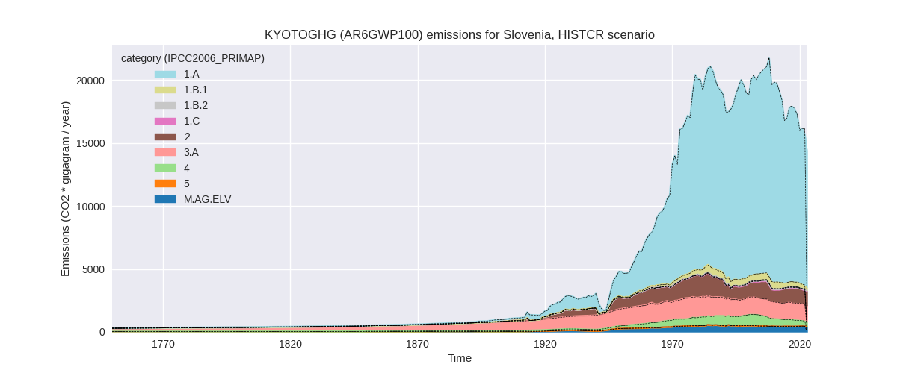
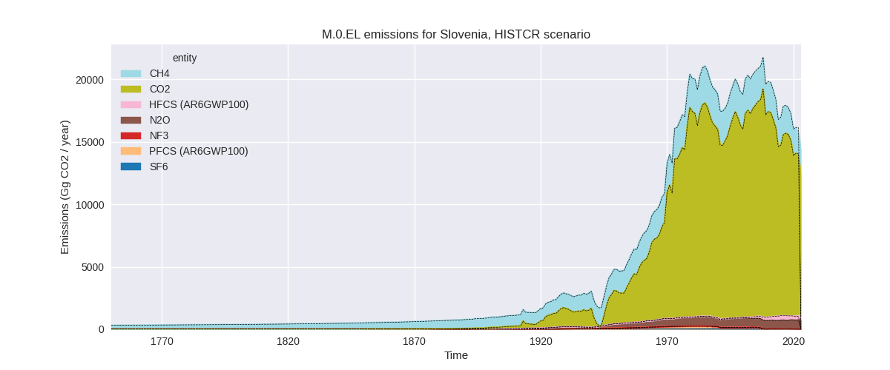
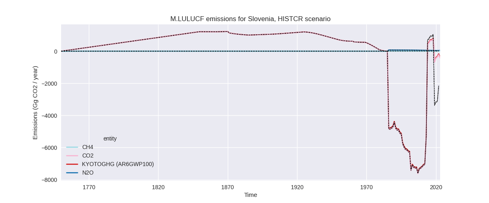
The following figures show the aggregate national total emissions
excluding LULUCF AR6GWP100 for the third party priority scenario. The
dotted linesshow the v2.5.1_final data.
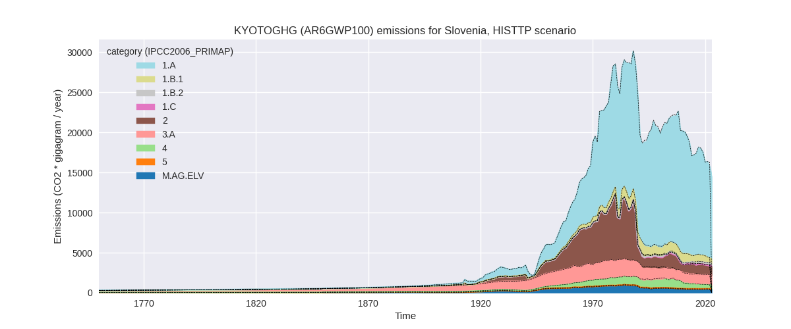
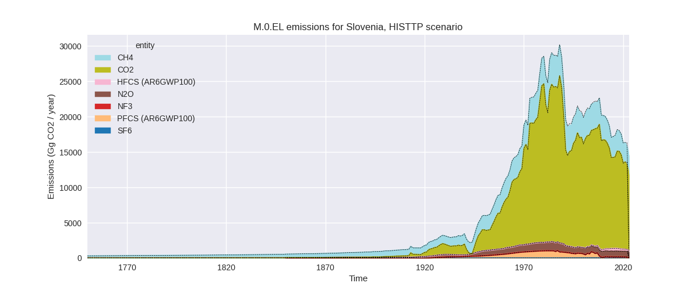
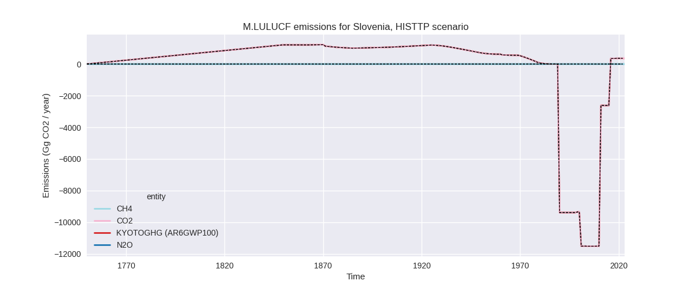
Overview over changes
In the country reported priority scenario we have the following
changes for aggregate Kyoto GHG and national total emissions excluding
LULUCF (M.0.EL):
- Emissions in 2022 have changed by -2.8%% (-457.62 Gg CO2 / year)
- Emissions in 1990-2022 have changed by -0.2%% (-46.73 Gg CO2 / year)
In the third party priority scenario we have the following changes
for aggregate Kyoto GHG and national total emissions excluding LULUCF
(M.0.EL):
- Emissions in 2022 have changed by -3.5%% (-564.45 Gg CO2 / year)
- Emissions in 1990-2022 have changed by -0.7%% (-143.92 Gg CO2 / year)
Most
important changes per scenario and time frame
In the country reported priority scenario the
following sector-gas combinations have the highest absolute impact on
national total KyotoGHG (AR6GWP100) emissions in 2022
(top 5):
- 1: 1.A, CO2 with -285.58 Gg CO2 / year (-2.4%)
- 2: 3.A, CH4 with -87.28 Gg CO2 / year (-6.6%)
- 3: 2, N2O with 67.98 Gg CO2 / year (213.2%)
- 4: 2, CO2 with -51.03 Gg CO2 / year (-6.5%)
- 5: 4, CH4 with -28.56 Gg CO2 / year (-8.1%)
In the country reported priority scenario the
following sector-gas combinations have the highest absolute impact on
national total KyotoGHG (AR6GWP100) emissions in
1990-2022 (top 5):
- 1: 3.A, CH4 with -15.65 Gg CO2 / year (-1.2%)
- 2: 4, CH4 with -13.92 Gg CO2 / year (-2.2%)
- 3: 1.A, CO2 with -8.42 Gg CO2 / year (-0.1%)
- 4: M.AG.ELV, N2O with -8.04 Gg CO2 / year (-1.8%)
- 5: 2, PFCS (AR6GWP100) with -2.52 Gg CO2 / year (-3.2%)
In the third party priority scenario the following
sector-gas combinations have the highest absolute impact on national
total KyotoGHG (AR6GWP100) emissions in 2022 (top
5):
- 1: 1.A, CO2 with -457.90 Gg CO2 / year (-3.9%)
- 2: 2, PFCS (AR6GWP100) with -63.79 Gg CO2 / year (-43.7%)
- 3: 4, CH4 with -41.35 Gg CO2 / year (-9.1%)
- 4: 4, N2O with -2.15 Gg CO2 / year (-4.6%)
- 5: 5, N2O with 0.45 Gg CO2 / year (1.2%)
In the third party priority scenario the following
sector-gas combinations have the highest absolute impact on national
total KyotoGHG (AR6GWP100) emissions in 1990-2022 (top
5):
- 1: 4, CH4 with -127.81 Gg CO2 / year (-14.8%)
- 2: 1.A, CO2 with -13.73 Gg CO2 / year (-0.1%)
- 3: 2, PFCS (AR6GWP100) with -1.93 Gg CO2 / year (-0.4%)
- 4: 4, N2O with -0.54 Gg CO2 / year (-1.4%)
- 5: 5, N2O with -0.38 Gg CO2 / year (-0.6%)
Notes on data changes
Here we list notes explaining important emissions changes for the
country. ’' means that the following text only applies to the TP time
series, while means that it only applies to the CR scenario. Otherwise
the note applies to both scenarios.
- We have added EEA 2024 data.
- The strong 2022 increase in N2O in 2.G (CR scenario) comes directly
from EEA data which replaces EDGAR growth rates which shows constant
emissions. Changes for other sectors have similar reasons. CO2 in 2.D
shows a steep decline in EEA data thus the relative changes are
high.
- 2022 changes in the TP scenario ale also due to updated data for
2022.
- Changes in sectors 4 and 5 in the TP scenario are due to the removal
of FAOSTAT data.
Changes by sector and gas
For each scenario and time frame the changes are displayed for all
individual sectors and all individual gases. In the sector plot we use
aggregate Kyoto GHGs in AR6GWP100. In the gas plot we usenational total
emissions without LULUCF. ## country reported scenario
2022
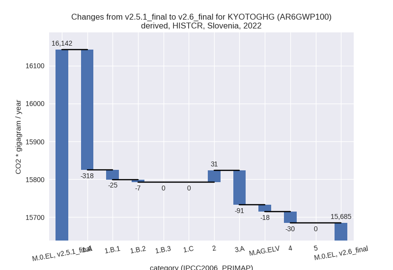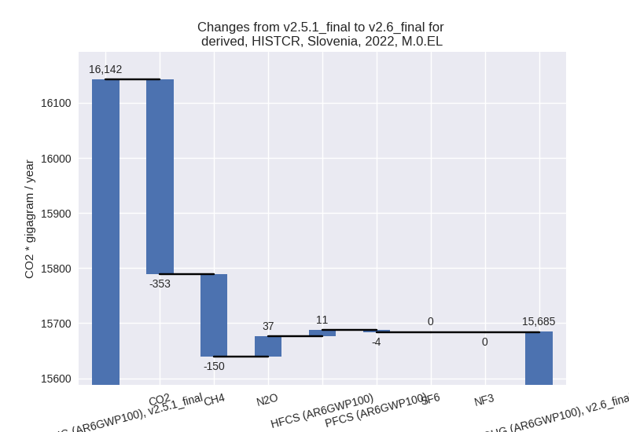
1990-2022
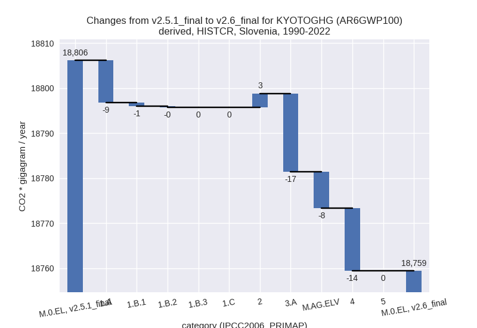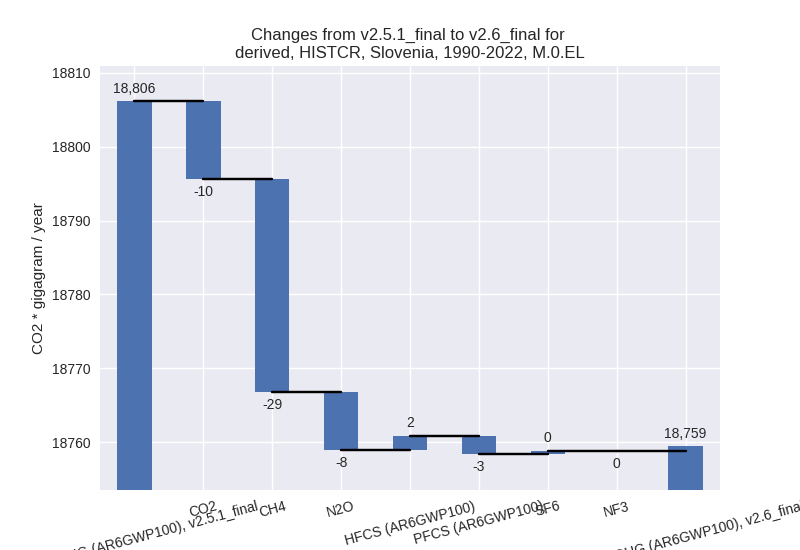
third party scenario
2022
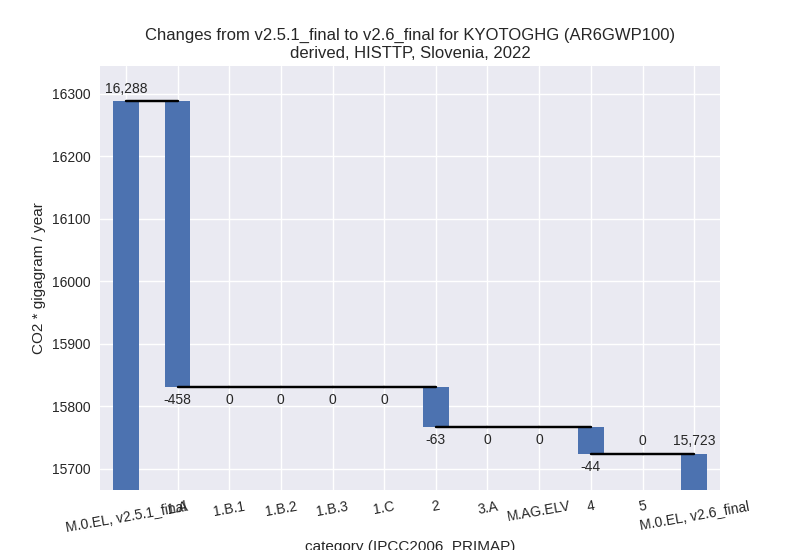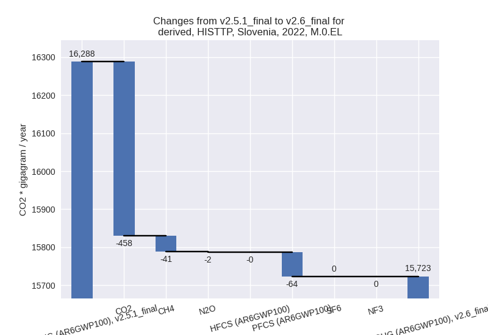
1990-2022
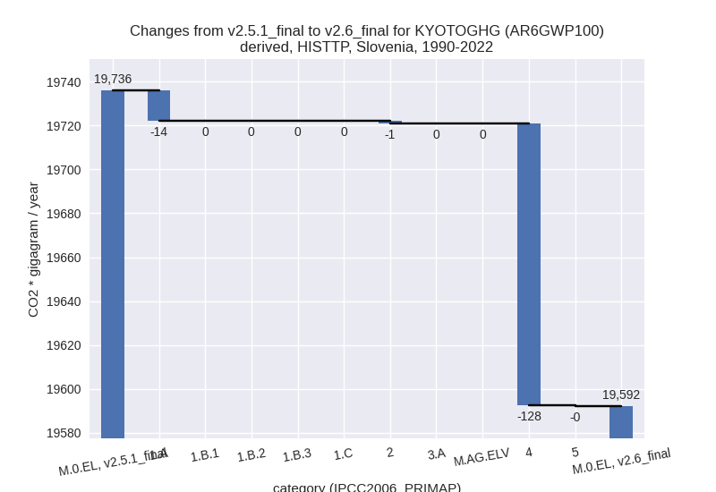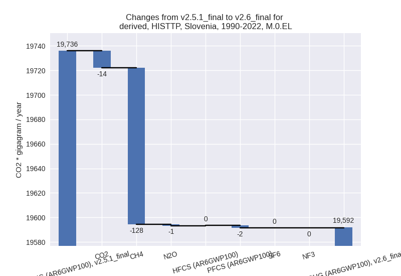
Detailed changes for the
scenarios:
country reported scenario
(HISTCR):
Most important changes
per time frame
For 2022 the following sector-gas combinations have
the highest absolute impact on national total KyotoGHG (AR6GWP100)
emissions in 2022 (top 5):
- 1: 1.A, CO2 with -285.58 Gg CO2 / year (-2.4%)
- 2: 3.A, CH4 with -87.28 Gg CO2 / year (-6.6%)
- 3: 2, N2O with 67.98 Gg CO2 / year (213.2%)
- 4: 2, CO2 with -51.03 Gg CO2 / year (-6.5%)
- 5: 4, CH4 with -28.56 Gg CO2 / year (-8.1%)
For 1990-2022 the following sector-gas combinations
have the highest absolute impact on national total KyotoGHG (AR6GWP100)
emissions in 1990-2022 (top 5):
- 1: 3.A, CH4 with -15.65 Gg CO2 / year (-1.2%)
- 2: 4, CH4 with -13.92 Gg CO2 / year (-2.2%)
- 3: 1.A, CO2 with -8.42 Gg CO2 / year (-0.1%)
- 4: M.AG.ELV, N2O with -8.04 Gg CO2 / year (-1.8%)
- 5: 2, PFCS (AR6GWP100) with -2.52 Gg CO2 / year (-3.2%)
Changes in the main sectors for aggregate KyotoGHG (AR6GWP100)
are
- 1: Total sectoral emissions in 2022 are 12392.30 Gg
CO2 / year which is 79.0% of M.0.EL emissions. 2022 Emissions have
changed by -2.7% (-349.39 Gg CO2 /
year). 1990-2022 Emissions have changed by -0.1% (-10.38 Gg CO2 / year). For 2022 the
changes per gas
are:
The changes come from the following subsectors:
- 1.A: Total sectoral emissions in 2022 are 12084.78
Gg CO2 / year which is 97.5% of category 1 emissions. 2022 Emissions
have changed by -2.6% (-317.56 Gg
CO2 / year). 1990-2022 Emissions have changed by -0.1% (-9.42 Gg CO2 / year). For 2022 the
changes per gas
are:
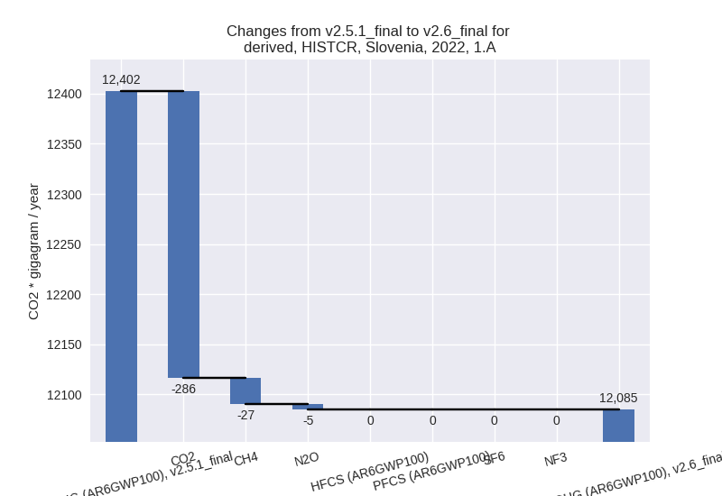
There is no subsector information available in PRIMAP-hist.
- 1.B.1: Total sectoral emissions in 2022 are 266.69
Gg CO2 / year which is 2.2% of category 1 emissions. 2022 Emissions have
changed by -8.6% (-25.10 Gg CO2 /
year). 1990-2022 Emissions have changed by -0.2% (-0.76 Gg CO2 / year). For 2022 the
changes per gas
are:
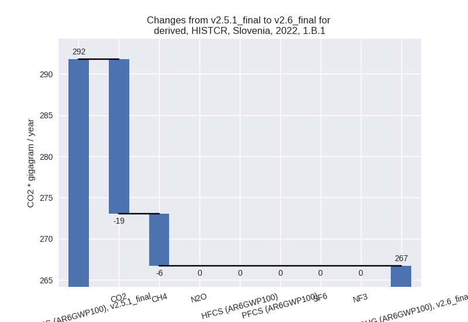
There is no subsector information available in PRIMAP-hist.
- 1.B.2: Total sectoral emissions in 2022 are 40.83
Gg CO2 / year which is 0.3% of category 1 emissions. 2022 Emissions have
changed by -14.2% (-6.74 Gg CO2 /
year). 1990-2022 Emissions have changed by -0.4% (-0.20 Gg CO2 / year). For 2022 the
changes per gas
are:
There is no subsector information available in PRIMAP-hist.
- 2: Total sectoral emissions in 2022 are 1196.92 Gg
CO2 / year which is 7.6% of M.0.EL emissions. 2022 Emissions have
changed by 2.6% (30.71 Gg CO2 /
year). 1990-2022 Emissions have changed by 0.3% (3.02 Gg CO2 / year). For 2022 the
changes per gas
are:
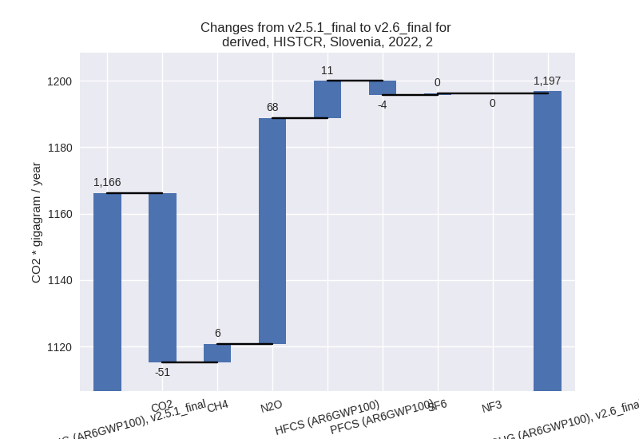
- M.AG: Total sectoral emissions in 2022 are 1715.11
Gg CO2 / year which is 10.9% of M.0.EL emissions. 2022 Emissions have
changed by -6.0% (-108.68 Gg CO2 /
year). 1990-2022 Emissions have changed by -1.4% (-25.41 Gg CO2 / year). For 2022 the
changes per gas
are:
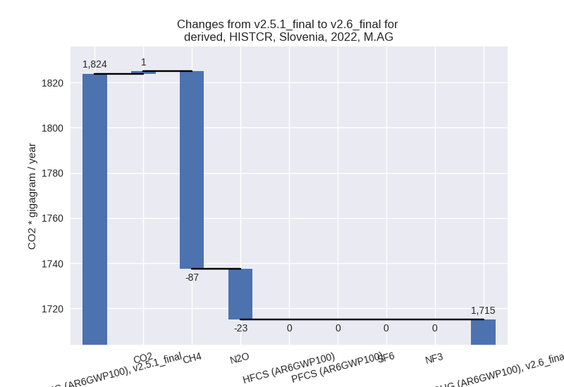
The changes come from the following subsectors:
- 3.A: Total sectoral emissions in 2022 are 1275.99
Gg CO2 / year which is 74.4% of category M.AG emissions. 2022 Emissions
have changed by -6.6% (-90.65 Gg CO2
/ year). 1990-2022 Emissions have changed by -1.3% (-17.39 Gg CO2 / year). For 2022 the
changes per gas
are:
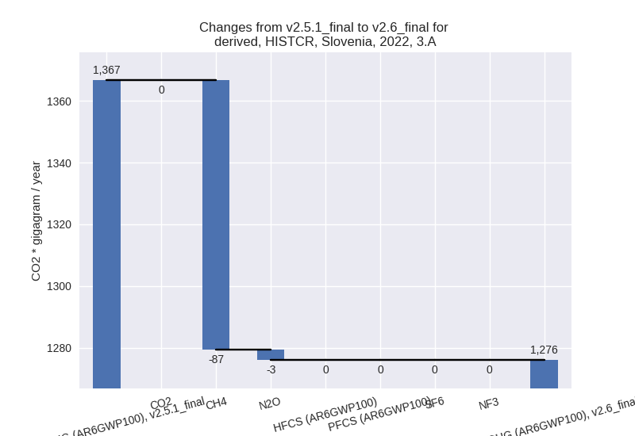
There is no subsector information available in PRIMAP-hist.
- M.AG.ELV: Total sectoral emissions in 2022 are
439.11 Gg CO2 / year which is 25.6% of category M.AG emissions. 2022
Emissions have changed by -3.9%
(-18.03 Gg CO2 / year). 1990-2022 Emissions have changed by -1.7% (-8.02 Gg CO2 / year). For 2022 the
changes per gas
are:
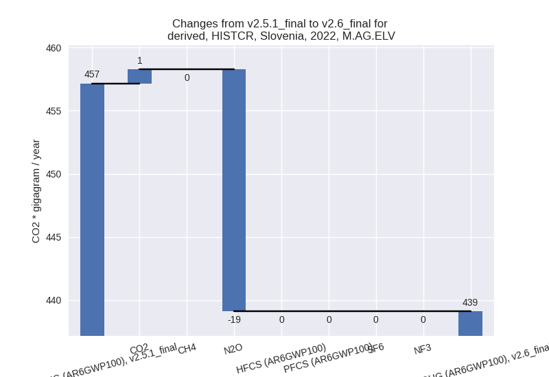
There is no subsector information available in PRIMAP-hist.
- 4: Total sectoral emissions in 2022 are 380.26 Gg
CO2 / year which is 2.4% of M.0.EL emissions. 2022 Emissions have
changed by -7.4% (-30.25 Gg CO2 /
year). 1990-2022 Emissions have changed by -2.1% (-13.95 Gg CO2 / year). For 2022 the
changes per gas
are:
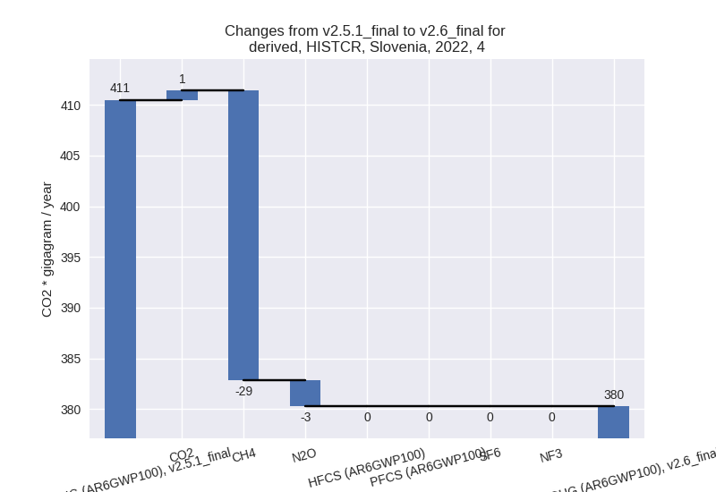
For 1990-2022 the changes per gas
are:
- 5: No data
third party scenario (HISTTP):
Most important changes
per time frame
For 2022 the following sector-gas combinations have
the highest absolute impact on national total KyotoGHG (AR6GWP100)
emissions in 2022 (top 5):
- 1: 1.A, CO2 with -457.90 Gg CO2 / year (-3.9%)
- 2: 2, PFCS (AR6GWP100) with -63.79 Gg CO2 / year (-43.7%)
- 3: 4, CH4 with -41.35 Gg CO2 / year (-9.1%)
- 4: 4, N2O with -2.15 Gg CO2 / year (-4.6%)
- 5: 5, N2O with 0.45 Gg CO2 / year (1.2%)
For 1990-2022 the following sector-gas combinations
have the highest absolute impact on national total KyotoGHG (AR6GWP100)
emissions in 1990-2022 (top 5):
- 1: 4, CH4 with -127.81 Gg CO2 / year (-14.8%)
- 2: 1.A, CO2 with -13.73 Gg CO2 / year (-0.1%)
- 3: 2, PFCS (AR6GWP100) with -1.93 Gg CO2 / year (-0.4%)
- 4: 4, N2O with -0.54 Gg CO2 / year (-1.4%)
- 5: 5, N2O with -0.38 Gg CO2 / year (-0.6%)
Changes in the main sectors for aggregate KyotoGHG (AR6GWP100)
are
- 1: Total sectoral emissions in 2022 are 12359.59 Gg
CO2 / year which is 78.6% of M.0.EL emissions. 2022 Emissions have
changed by -3.6% (-457.90 Gg CO2 /
year). 1990-2022 Emissions have changed by -0.1% (-13.73 Gg CO2 / year). For 2022 the
changes per gas
are:
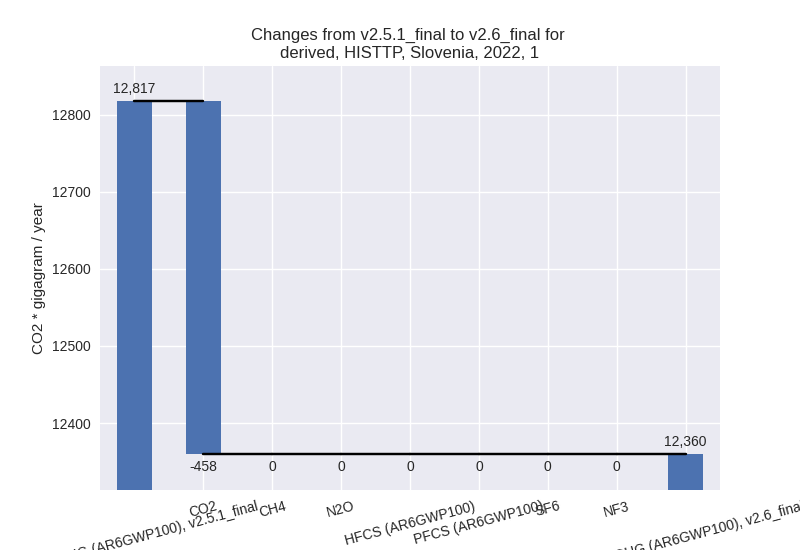
The changes come from the following subsectors:
- 1.A: Total sectoral emissions in 2022 are 11429.02
Gg CO2 / year which is 92.5% of category 1 emissions. 2022 Emissions
have changed by -3.9% (-457.90 Gg
CO2 / year). 1990-2022 Emissions have changed by -0.1% (-13.73 Gg CO2 / year). For 2022 the
changes per gas
are:
There is no subsector information available in PRIMAP-hist.
- 1.B.1: Total sectoral emissions in 2022 are 629.98
Gg CO2 / year which is 5.1% of category 1 emissions. 2022 Emissions have
changed by 0.0% (0.00 Gg CO2 /
year). 1990-2022 Emissions have changed by 0.0% (0.00 Gg CO2 / year).
- 1.B.2: Total sectoral emissions in 2022 are 300.59
Gg CO2 / year which is 2.4% of category 1 emissions. 2022 Emissions have
changed by 0.0% (0.00 Gg CO2 /
year). 1990-2022 Emissions have changed by 0.0% (0.00 Gg CO2 / year).
- 2: Total sectoral emissions in 2022 are 1162.00 Gg
CO2 / year which is 7.4% of M.0.EL emissions. 2022 Emissions have
changed by -5.2% (-63.35 Gg CO2 /
year). 1990-2022 Emissions have changed by -0.1% (-1.32 Gg CO2 / year). For 2022 the
changes per gas
are:
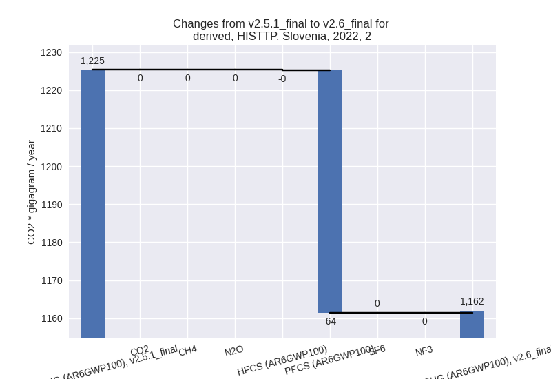
- M.AG: Total sectoral emissions in 2022 are 1699.66
Gg CO2 / year which is 10.8% of M.0.EL emissions. 2022 Emissions have
changed by 0.0% (0.00 Gg CO2 /
year). 1990-2022 Emissions have changed by 0.0% (0.00 Gg CO2 / year).
- 4: Total sectoral emissions in 2022 are 464.27 Gg
CO2 / year which is 3.0% of M.0.EL emissions. 2022 Emissions have
changed by -8.6% (-43.64 Gg CO2 /
year). 1990-2022 Emissions have changed by -14.2% (-128.49 Gg CO2 / year). For 2022
the changes per gas
are:
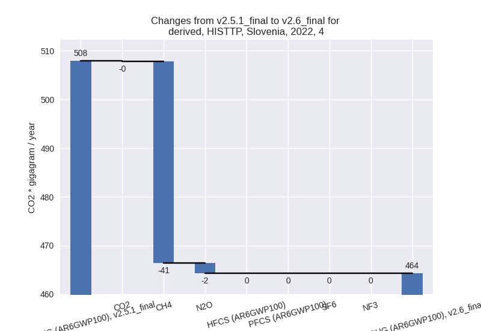
For 1990-2022 the changes per gas
are:
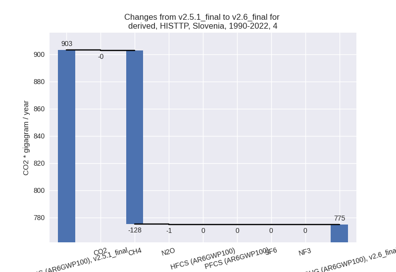
- 5: Total sectoral emissions in 2022 are 37.85 Gg
CO2 / year which is 0.2% of M.0.EL emissions. 2022 Emissions have
changed by 1.2% (0.45 Gg CO2 /
year). 1990-2022 Emissions have changed by -0.6% (-0.38 Gg CO2 / year).